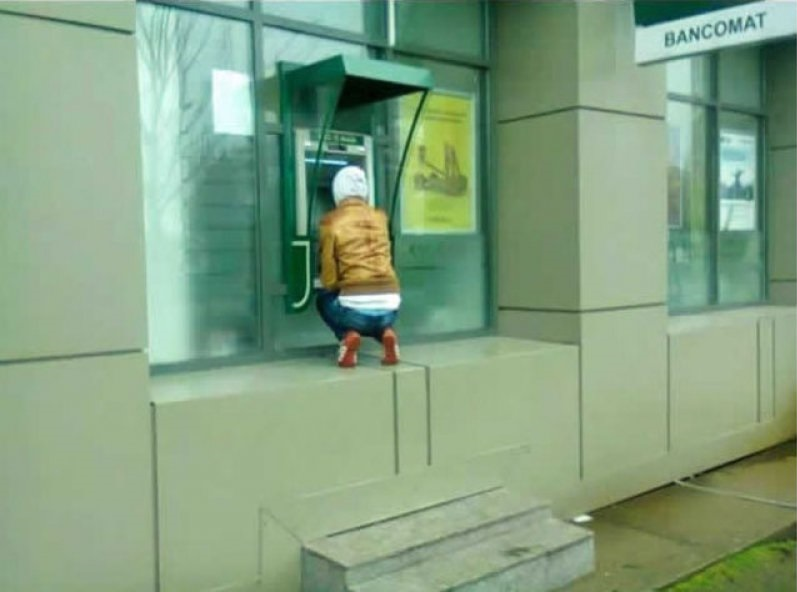

Yürümüş Gibi Yapan Merdivenlerimiz
Sonsuzluğa Açılan Kapılarımız
Kaçılamayan Acil Çıkışlarımız

Kullanışlı ATM'lerimiz
Gizli Duvarlarımız


Dolaylı yoldan insanların ağzına tükürür (içeceklerine tükürür ve tükürdüğünü de yüzlerine söyler)
Toplum sağlığıyla oynar (arada çok leziz! yemekler yapar)
Boyundan büyük topuklu ayakkabılarının çıkardığı sesler Mors Alfabesi'nde "şerefsiz" demektedir (Deniz'in boyu=4740/3 mm)
Normal bir insan imajı vermek için tiyatro, konser, sergi gibi sanatsal aktivitelere katılır (Onun için en büyük sanat "şerefsizliktir")
Evde, bazen tuvali bazen de kendi saçlarını boyar ve bununla yetinmeyip insanların saçlarını değişik renklere boyama planları yapar
Tüm gün harıl harıl çalışırken bile şerefsizlik faaliyetlerine kesintisiz devam eder
Hak geçmesin diye; din, dil, ırk, eş, dost, akraba ayırt etmeksizin herkese eşit bir şekilde şerefsizliklerini yapar
Babası yaşında insanları yılan ile korkutup, dört nala koşturur (üstlerine bahis oynatmışlığı bile vardır)
İnsanlardan habersiz isimlerini değiştirir (ablası bir gün resmi işlerini halletmeye çalışırken adını bilmediği gerçeğiyle yüzleşir)
İnsanlar en çok neyden korkuyorsa onlarla korkutur (kurbağadan mı korkuyorsunuz? Artık evin içinde bir kurbağa var)
Her cumartesi yaptığı şerefsizlikleri babasıyla kutlar ve haftayı babasına da şerefsizlik yaparak kapatır
Siyah yalanlar söyler (söylediği yalanları kendisi doğru kabul eder ve bu sayede vicdanı hep rahattır)
Ve kimsenin aklına gelmeyecek her türlü şerefsizlik ve mimarlık işlerini itina ile yapar.
MİMARİ PROJELERİMİZ